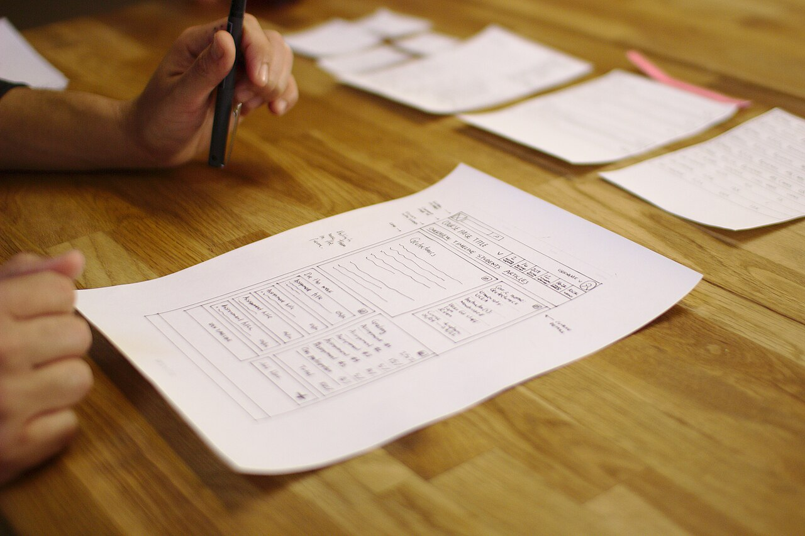
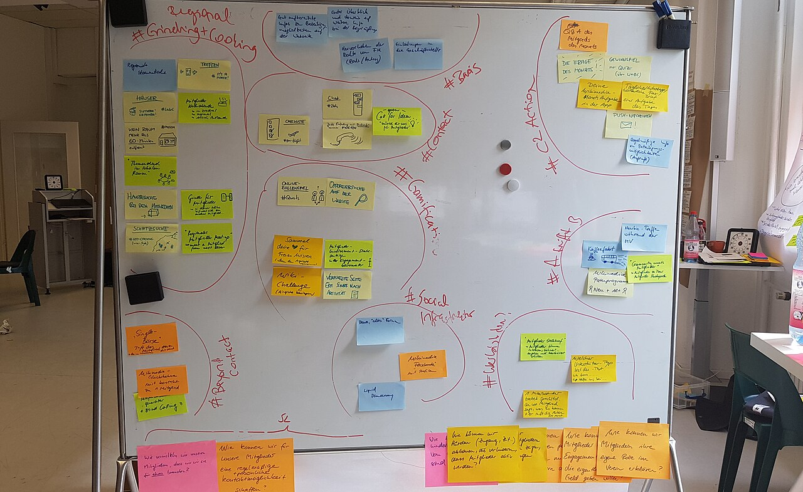
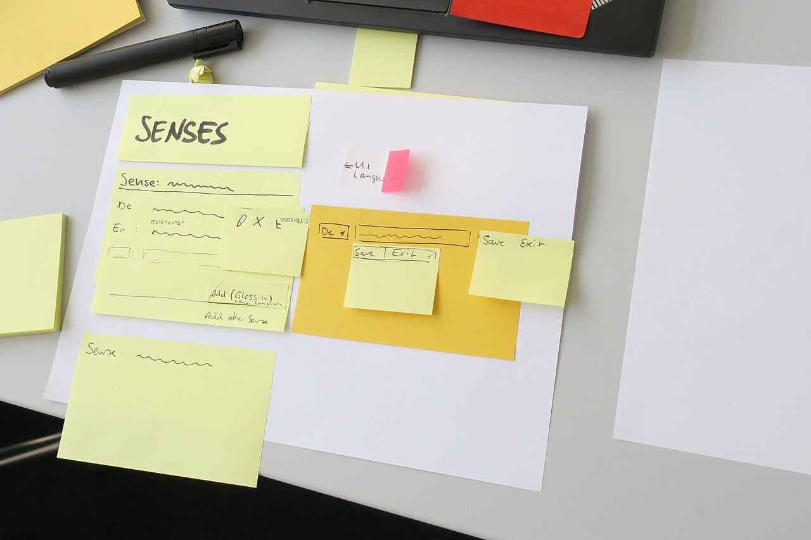
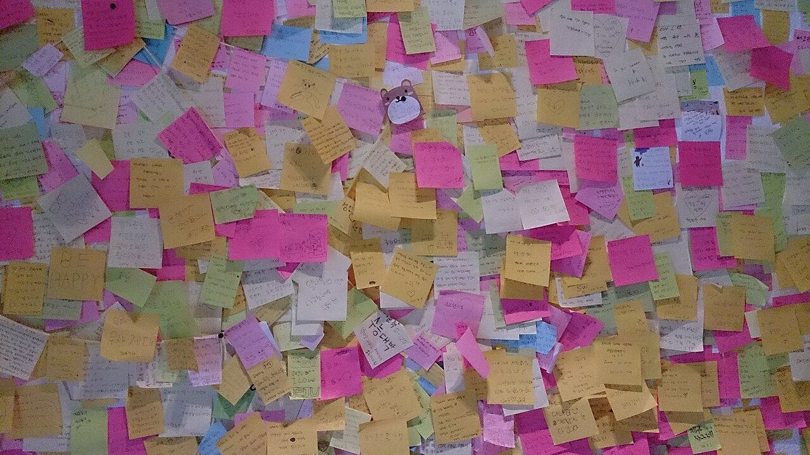

Fluxo de pedido completo Em breve
Do pedido à entrega no Quero Delivery, da pesquisa ao lançamento.
Quero Delivery · Product Designer · 2025
No Quero Delivery desde 2025
Sou o João Pedro. Cuido do produto de ponta a ponta: pesquisa, protótipo, teste de usabilidade, design system e métricas.
Entrevistas com usuários e leitura dos dados de uso do app antes de desenhar a primeira tela.

Protótipos testados com usuários. O que trava no teste volta para o protótipo antes de chegar à engenharia.

Componentes que o time reutiliza, e métricas acompanhadas depois do lançamento para saber se a mudança funcionou.

Monto fluxos com agentes de IA que leem o Figma, seguem as regras do time e consultam o Design System.
Projetos do Compre Sem Fila Delivery e do Quero Delivery, da pesquisa à métrica.
Componentes, tokens e documentação para o time de produto do Compre Sem Fila Delivery.
Compre Sem Fila Delivery · Product Designer · 2021 a 2025
Do pedido à entrega no Quero Delivery, da pesquisa ao lançamento.
Quero Delivery · Product Designer · 2025
Entrevistas e testes no Compre Sem Fila Delivery, e o que mudou a partir deles.
Compre Sem Fila Delivery · Product Designer · 2021 a 2025
Desde 2021 desenho apps de pedido e entrega, junto com produto e engenharia, do problema à métrica.
Product Designer
Product Designer